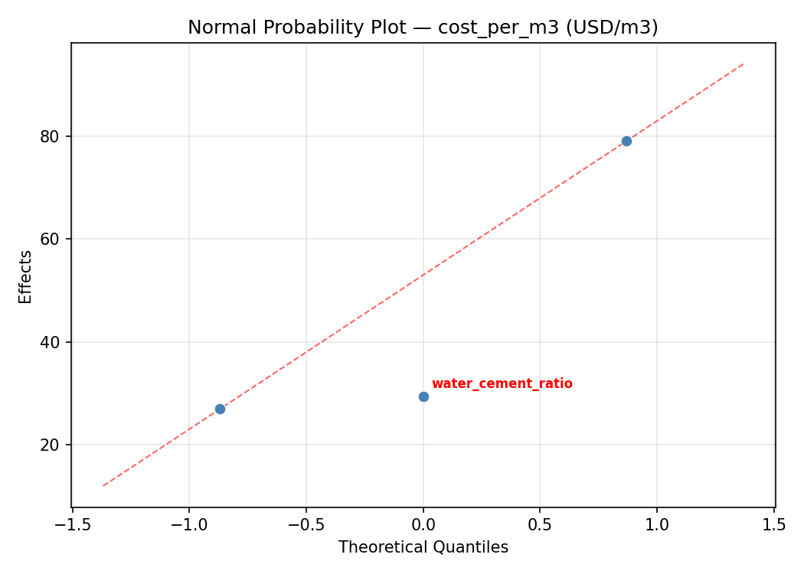

Summary
This experiment investigates diy concrete mix design. Central composite design to maximize compressive strength and minimize cost by tuning cement ratio, water-cement ratio, and aggregate size.
The design varies 3 factors: cement pct (%), ranging from 10 to 20, water cement ratio (ratio), ranging from 0.35 to 0.65, and aggregate mm (mm), ranging from 10 to 25. The goal is to optimize 2 responses: strength mpa (MPa) (maximize) and cost per m3 (USD/m3) (minimize). Fixed conditions held constant across all runs include sand type = sharp, admixture = none.
A Central Composite Design (CCD) was selected to fit a full quadratic response surface model, including curvature and interaction effects. With 3 factors this produces 22 runs including center points and axial (star) points that extend beyond the factorial range.
Quadratic response surface models were fitted to capture potential curvature and factor interactions. The RSM contour plots below visualize how pairs of factors jointly affect each response.
Key Findings
For strength mpa, the most influential factors were aggregate mm (34.1%), cement pct (33.8%), water cement ratio (32.1%). The best observed value was 42.4 (at cement pct = 15, water cement ratio = 0.5, aggregate mm = 17.5).
For cost per m3, the most influential factors were aggregate mm (43.3%), water cement ratio (38.3%), cement pct (18.4%). The best observed value was 64.0 (at cement pct = 20, water cement ratio = 0.65, aggregate mm = 10).
Recommended Next Steps
- Run confirmation experiments at the predicted optimal settings to validate the model.
- Consider whether any fixed factors should be varied in a future study.
Experimental Setup
Factors
| Factor | Low | High | Unit |
|---|
cement_pct | 10 | 20 | % |
water_cement_ratio | 0.35 | 0.65 | ratio |
aggregate_mm | 10 | 25 | mm |
Fixed: sand_type = sharp, admixture = none
Responses
| Response | Direction | Unit |
|---|
strength_mpa | ↑ maximize | MPa |
cost_per_m3 | ↓ minimize | USD/m3 |
Configuration
{
"metadata": {
"name": "DIY Concrete Mix Design",
"description": "Central composite design to maximize compressive strength and minimize cost by tuning cement ratio, water-cement ratio, and aggregate size"
},
"factors": [
{
"name": "cement_pct",
"levels": [
"10",
"20"
],
"type": "continuous",
"unit": "%"
},
{
"name": "water_cement_ratio",
"levels": [
"0.35",
"0.65"
],
"type": "continuous",
"unit": "ratio"
},
{
"name": "aggregate_mm",
"levels": [
"10",
"25"
],
"type": "continuous",
"unit": "mm"
}
],
"fixed_factors": {
"sand_type": "sharp",
"admixture": "none"
},
"responses": [
{
"name": "strength_mpa",
"optimize": "maximize",
"unit": "MPa"
},
{
"name": "cost_per_m3",
"optimize": "minimize",
"unit": "USD/m3"
}
],
"settings": {
"operation": "central_composite",
"test_script": "use_cases/138_concrete_mix/sim.sh"
}
}
Experimental Matrix
The Central Composite Design produces 22 runs. Each row is one experiment with specific factor settings.
| Run | cement_pct | water_cement_ratio | aggregate_mm |
|---|
| 1 | 15 | 0.5 | 17.5 |
| 2 | 20 | 0.35 | 25 |
| 3 | 10 | 0.65 | 10 |
| 4 | 15 | 0.773861 | 17.5 |
| 5 | 15 | 0.5 | 17.5 |
| 6 | 5.87129 | 0.5 | 17.5 |
| 7 | 15 | 0.5 | 3.80694 |
| 8 | 15 | 0.5 | 17.5 |
| 9 | 20 | 0.65 | 10 |
| 10 | 24.1287 | 0.5 | 17.5 |
| 11 | 15 | 0.5 | 17.5 |
| 12 | 15 | 0.226139 | 17.5 |
| 13 | 15 | 0.5 | 17.5 |
| 14 | 10 | 0.35 | 25 |
| 15 | 15 | 0.5 | 17.5 |
| 16 | 20 | 0.35 | 10 |
| 17 | 15 | 0.5 | 31.1931 |
| 18 | 20 | 0.65 | 25 |
| 19 | 15 | 0.5 | 17.5 |
| 20 | 10 | 0.35 | 10 |
| 21 | 10 | 0.65 | 25 |
| 22 | 15 | 0.5 | 17.5 |
Step-by-Step Workflow
1
Preview the design
$ python doe.py info --config use_cases/138_concrete_mix/config.json
2
Generate the runner script
$ python doe.py generate --config use_cases/138_concrete_mix/config.json \
--output use_cases/138_concrete_mix/results/run.sh --seed 42
3
Execute the experiments
$ bash use_cases/138_concrete_mix/results/run.sh
4
Analyze results
$ python doe.py analyze --config use_cases/138_concrete_mix/config.json
5
Get optimization recommendations
$ python doe.py optimize --config use_cases/138_concrete_mix/config.json
6
Multi-objective optimization
With 2 competing responses, use --multi to find the best compromise via Derringer–Suich desirability.
$ python doe.py optimize --config use_cases/138_concrete_mix/config.json --multi
7
Generate the HTML report
$ python doe.py report --config use_cases/138_concrete_mix/config.json \
--output use_cases/138_concrete_mix/results/report.html
Features Exercised
| Feature | Value |
|---|
| Design type | central_composite |
| Factor types | continuous (all 3) |
| Arg style | double-dash |
| Responses | 2 (strength_mpa ↑, cost_per_m3 ↓) |
| Total runs | 22 |
Analysis Results
Generated from actual experiment runs using the DOE Helper Tool.
Response: strength_mpa
Top factors: aggregate_mm (34.1%), cement_pct (33.8%), water_cement_ratio (32.1%).
ANOVA
| Source | DF | SS | MS | F | p-value |
|---|
| Source | DF | SS | MS | F | p-value |
| cement_pct | 4 | 695.3711 | 173.8428 | 3.294 | 0.0635 |
| water_cement_ratio | 4 | 664.5511 | 166.1378 | 3.148 | 0.0706 |
| aggregate_mm | 4 | 613.1736 | 153.2934 | 2.905 | 0.0848 |
| Lack | of | Fit | 2 | 0.0000 | 0.0000 |
| Pure | Error | 7 | 369.4150 | | |
| Error | 9 | 175.5120 | 52.7736 | | |
| Total | 21 | 2148.6077 | 102.3147 | | |
Pareto Chart

Main Effects Plot

Normal Probability Plot of Effects

Half-Normal Plot of Effects

Model Diagnostics

Response: cost_per_m3
Top factors: aggregate_mm (43.3%), water_cement_ratio (38.3%), cement_pct (18.4%).
ANOVA
| Source | DF | SS | MS | F | p-value |
|---|
| Source | DF | SS | MS | F | p-value |
| cement_pct | 4 | 601.8561 | 150.4640 | 0.517 | 0.7255 |
| water_cement_ratio | 4 | 1885.5227 | 471.3807 | 1.621 | 0.2510 |
| aggregate_mm | 4 | 1201.8561 | 300.4640 | 1.033 | 0.4411 |
| Lack | of | Fit | 2 | 1436.5379 | 718.2689 |
| Pure | Error | 7 | 2035.5000 | | |
| Error | 9 | 3472.0379 | 290.7857 | | |
| Total | 21 | 7161.2727 | 341.0130 | | |
Pareto Chart

Main Effects Plot

Normal Probability Plot of Effects

Half-Normal Plot of Effects

Model Diagnostics

Response Surface Plots
3D surfaces fitted with quadratic RSM. Red dots are observed data points.
cost per m3 cement pct vs aggregate mm

cost per m3 cement pct vs water cement ratio

cost per m3 water cement ratio vs aggregate mm

strength mpa cement pct vs aggregate mm

strength mpa cement pct vs water cement ratio

strength mpa water cement ratio vs aggregate mm

Multi-Objective Optimization
When responses compete, Derringer–Suich desirability finds the best compromise.
Each response is scaled to a 0–1 desirability, then combined via a weighted geometric mean.
Overall Desirability
D = 0.6878
Per-Response Desirability
| Response | Weight | Desirability | Predicted | Dir |
|---|
strength_mpa |
1.5 |
|
29.60 0.6507 29.60 MPa |
↑ |
cost_per_m3 |
1.0 |
|
82.00 0.7474 82.00 USD/m3 |
↓ |
Recommended Settings
| Factor | Value |
|---|
cement_pct | 5.87129 % |
water_cement_ratio | 0.5 ratio |
aggregate_mm | 17.5 mm |
Source: from observed run #17
Trade-off Summary
Sacrifice = how much worse than single-objective best.
| Response | Predicted | Best Observed | Sacrifice |
|---|
cost_per_m3 | 82.00 | 64.00 | +18.00 |
Top 3 Runs by Desirability
| Run | D | Factor Settings |
|---|
| #12 | 0.6547 | cement_pct=15, water_cement_ratio=0.5, aggregate_mm=31.1931 |
| #2 | 0.6351 | cement_pct=15, water_cement_ratio=0.5, aggregate_mm=17.5 |
Model Quality
| Response | R² | Type |
|---|
cost_per_m3 | 0.0753 | linear |
Full Multi-Objective Output
============================================================
MULTI-OBJECTIVE OPTIMIZATION
Method: Derringer-Suich Desirability Function
============================================================
Overall desirability: D = 0.6878
Response Weight Desirability Predicted Direction
---------------------------------------------------------------------
strength_mpa 1.5 0.6507 29.60 MPa ↑
cost_per_m3 1.0 0.7474 82.00 USD/m3 ↓
Recommended settings:
cement_pct = 5.87129 %
water_cement_ratio = 0.5 ratio
aggregate_mm = 17.5 mm
(from observed run #17)
Trade-off summary:
strength_mpa: 29.60 (best observed: 42.40, sacrifice: +12.80)
cost_per_m3: 82.00 (best observed: 64.00, sacrifice: +18.00)
Model quality:
strength_mpa: R² = 0.0536 (linear)
cost_per_m3: R² = 0.0753 (linear)
Top 3 observed runs by overall desirability:
1. Run #17 (D=0.6878): cement_pct=5.87129, water_cement_ratio=0.5, aggregate_mm=17.5
2. Run #12 (D=0.6547): cement_pct=15, water_cement_ratio=0.5, aggregate_mm=31.1931
3. Run #2 (D=0.6351): cement_pct=15, water_cement_ratio=0.5, aggregate_mm=17.5
Full Analysis Output
=== Main Effects: strength_mpa ===
Factor Effect Std Error % Contribution
--------------------------------------------------------------
aggregate_mm 21.9333 2.1565 34.1%
cement_pct 21.7000 2.1565 33.8%
water_cement_ratio 20.6583 2.1565 32.1%
=== ANOVA Table: strength_mpa ===
Source DF SS MS F p-value
-----------------------------------------------------------------------------
cement_pct 4 695.3711 173.8428 3.294 0.0635
water_cement_ratio 4 664.5511 166.1378 3.148 0.0706
aggregate_mm 4 613.1736 153.2934 2.905 0.0848
Lack of Fit 2 0.0000 0.0000 0.000 1.0000
Pure Error 7 369.4150 52.7736
Error 9 175.5120 52.7736
Total 21 2148.6077 102.3147
=== Summary Statistics: strength_mpa ===
cement_pct:
Level N Mean Std Min Max
------------------------------------------------------------
10 4 26.6750 3.5612 23.9000 31.9000
15 12 23.5917 10.6749 4.1000 42.4000
20 4 11.4000 7.3417 5.1000 20.5000
24.1287 1 25.0000 0.0000 25.0000 25.0000
5.87129 1 33.1000 0.0000 33.1000 33.1000
water_cement_ratio:
Level N Mean Std Min Max
------------------------------------------------------------
0.226139 1 5.4000 0.0000 5.4000 5.4000
0.35 4 15.1000 11.1681 5.1000 25.6000
0.5 12 26.0583 9.2525 4.1000 42.4000
0.65 4 22.9750 7.4875 14.2000 31.9000
0.773861 1 23.1000 0.0000 23.1000 23.1000
aggregate_mm:
Level N Mean Std Min Max
------------------------------------------------------------
10 4 17.3000 9.1181 5.8000 25.3000
17.5 12 26.0333 9.0110 5.4000 42.4000
25 4 20.7750 11.4430 5.1000 31.9000
3.80694 1 4.1000 0.0000 4.1000 4.1000
31.1931 1 24.7000 0.0000 24.7000 24.7000
=== Main Effects: cost_per_m3 ===
Factor Effect Std Error % Contribution
--------------------------------------------------------------
aggregate_mm 37.0000 3.9371 43.3%
water_cement_ratio 32.7500 3.9371 38.3%
cement_pct 15.7500 3.9371 18.4%
=== ANOVA Table: cost_per_m3 ===
Source DF SS MS F p-value
-----------------------------------------------------------------------------
cement_pct 4 601.8561 150.4640 0.517 0.7255
water_cement_ratio 4 1885.5227 471.3807 1.621 0.2510
aggregate_mm 4 1201.8561 300.4640 1.033 0.4411
Lack of Fit 2 1436.5379 718.2689 2.470 0.1543
Pure Error 7 2035.5000 290.7857
Error 9 3472.0379 290.7857
Total 21 7161.2727 341.0130
=== Summary Statistics: cost_per_m3 ===
cement_pct:
Level N Mean Std Min Max
------------------------------------------------------------
10 4 103.0000 26.7333 87.0000 143.0000
15 12 91.3333 17.5620 64.0000 126.0000
20 4 87.2500 18.4639 70.0000 109.0000
24.1287 1 94.0000 0.0000 94.0000 94.0000
5.87129 1 99.0000 0.0000 99.0000 99.0000
water_cement_ratio:
Level N Mean Std Min Max
------------------------------------------------------------
0.226139 1 85.0000 0.0000 85.0000 85.0000
0.35 4 81.5000 11.0905 70.0000 91.0000
0.5 12 94.0000 16.7820 64.0000 126.0000
0.65 4 108.7500 24.5544 87.0000 143.0000
0.773861 1 76.0000 0.0000 76.0000 76.0000
aggregate_mm:
Level N Mean Std Min Max
------------------------------------------------------------
10 4 89.2500 16.0078 70.0000 109.0000
17.5 12 94.6667 15.2931 76.0000 126.0000
25 4 101.0000 29.5409 74.0000 143.0000
3.80694 1 64.0000 0.0000 64.0000 64.0000
31.1931 1 89.0000 0.0000 89.0000 89.0000
Optimization Recommendations
=== Optimization: strength_mpa ===
Direction: maximize
Best observed run: #2
cement_pct = 15
water_cement_ratio = 0.5
aggregate_mm = 17.5
Value: 42.4
RSM Model (linear, R² = 0.1147, Adj R² = -0.0328):
Coefficients:
intercept +22.4318
cement_pct -2.2168
water_cement_ratio -2.2234
aggregate_mm +2.6363
RSM Model (quadratic, R² = 0.3112, Adj R² = -0.2054):
Coefficients:
intercept +23.7055
cement_pct -2.2168
water_cement_ratio -2.2234
aggregate_mm +2.6363
cement_pct*water_cement_ratio -6.0750
cement_pct*aggregate_mm +1.2500
water_cement_ratio*aggregate_mm -1.8750
cement_pct^2 -0.5668
water_cement_ratio^2 +0.5432
aggregate_mm^2 -1.8868
Curvature analysis:
aggregate_mm coef=-1.8868 concave (has a maximum)
cement_pct coef=-0.5668 concave (has a maximum)
water_cement_ratio coef=+0.5432 convex (has a minimum)
Notable interactions:
cement_pct*water_cement_ratio coef=-6.0750 (antagonistic)
water_cement_ratio*aggregate_mm coef=-1.8750 (antagonistic)
cement_pct*aggregate_mm coef=+1.2500 (synergistic)
Predicted optimum (from linear model, at observed points):
cement_pct = 10
water_cement_ratio = 0.35
aggregate_mm = 25
Predicted value: 29.5083
Surface optimum (via L-BFGS-B, linear model):
cement_pct = 10
water_cement_ratio = 0.35
aggregate_mm = 25
Predicted value: 29.5083
Model quality: Weak fit — consider adding center points or using a different design.
Factor importance:
1. water_cement_ratio (effect: 14.6, contribution: 42.7%)
2. aggregate_mm (effect: 11.1, contribution: 32.4%)
3. cement_pct (effect: 8.5, contribution: 24.8%)
=== Optimization: cost_per_m3 ===
Direction: minimize
Best observed run: #21
cement_pct = 20
water_cement_ratio = 0.65
aggregate_mm = 10
Value: 64.0
RSM Model (linear, R² = 0.1220, Adj R² = -0.0243):
Coefficients:
intercept +93.1818
cement_pct -1.8972
water_cement_ratio -6.4266
aggregate_mm -3.8295
RSM Model (quadratic, R² = 0.2787, Adj R² = -0.2622):
Coefficients:
intercept +98.6555
cement_pct -1.8972
water_cement_ratio -6.4266
aggregate_mm -3.8295
cement_pct*water_cement_ratio -8.5000
cement_pct*aggregate_mm +1.5000
water_cement_ratio*aggregate_mm +1.7500
cement_pct^2 -2.9368
water_cement_ratio^2 -4.2869
aggregate_mm^2 -0.9868
Curvature analysis:
water_cement_ratio coef=-4.2869 concave (has a maximum)
cement_pct coef=-2.9368 concave (has a maximum)
aggregate_mm coef=-0.9868 concave (has a maximum)
Notable interactions:
cement_pct*water_cement_ratio coef=-8.5000 (antagonistic)
water_cement_ratio*aggregate_mm coef=+1.7500 (synergistic)
cement_pct*aggregate_mm coef=+1.5000 (synergistic)
Predicted optimum (from linear model, at observed points):
cement_pct = 10
water_cement_ratio = 0.35
aggregate_mm = 10
Predicted value: 105.3352
Surface optimum (via L-BFGS-B, linear model):
cement_pct = 20
water_cement_ratio = 0.65
aggregate_mm = 25
Predicted value: 81.0284
Model quality: Weak fit — consider adding center points or using a different design.
Factor importance:
1. aggregate_mm (effect: 22.8, contribution: 42.5%)
2. water_cement_ratio (effect: 19.0, contribution: 35.5%)
3. cement_pct (effect: 11.8, contribution: 22.0%)